library(RColorBrewer)
library(biscale)
library(colorspace)
library(palmerpenguins)
library(patchwork)
library(swatches)
library(tidyverse)
source("06-color-helpers.R")Color
- We’ve been using color in our data visualizations since the first day of class. But despite being a topic that most people can informally talk about (and maybe even encountered in preschool…), what color actually is is a rich topic. Learning a bit more about the theory and psychology of color can be helpful for designing more effective data visualizations.
Color Theory
Neuroscience
Human vision works through photoreceptor cells called rods and cones. Rod cells are more sensitive than cones and can detect even a single photon of light (cones need tens to hundreds before they are stimulated). But they aren’t able to effectively distinguish between photons from different wavelengths, so their signals can’t be used to decode finer color variations. This is why colors appear subdued at night.
Cone cells are sensitive to specific wavelengths and come in three types (L, M, S) which are sensitive to long, medium, and short wavelengths of light. How exactly the relative activations of these photoreceptor cells get translated to perceived color is actually an actively debated topic in neuroscience. But for our purposes, we’ll work with the opponent color channels theory discussed in the reading. This theory suggests that the signals from these cone cells get translated into three channels, a red-green, a blue-yellow, and a luminance (black-white) gradient.
Color Spaces
Color spaces are attempts to mathematically ``map’’ the space of colors that are perceivable by the human visual system. They provide different ways of operationalizing ideas like color and luminance, but be mindful that these are not necessarily perfect matches with how our biology works.
The RGB color space decomposes colors into red, green, and blue components. It associates each color with a point in 3D space.
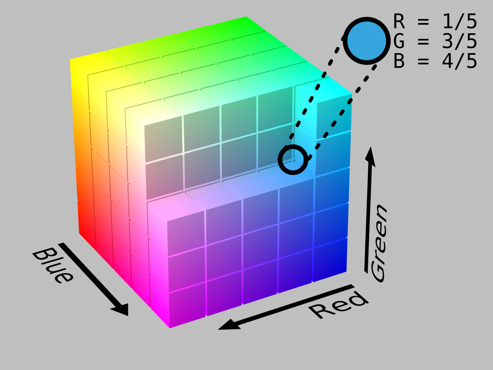
This system became popular with the rise of television and computer monitors, which construct color in this way. For example, LCD displays simulate the appearance of many different colors by using liquid crystals to adjust the relative backlight passing through red, green, and blue filters.
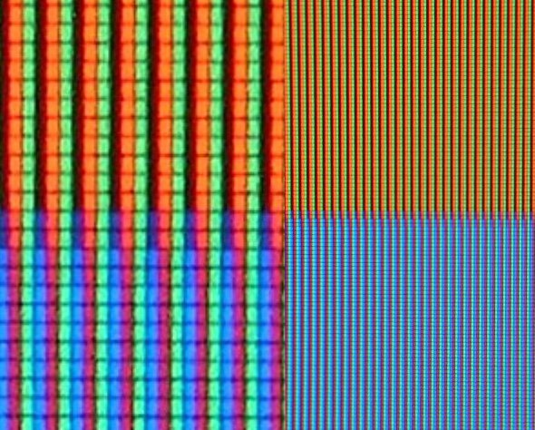
While this is convenient for thinking about how color is constructed on these devices, it’s not useful for speaking about color in visualization design. The issue is that simple operations in RGB space don’t correspond to easily explainable changes in the perceived color. For example, suppose we want to change an orange color to relatively less saturated version. This requires an unintuitive readjustment of each of the RGB color components (it’s not immediately obvious why we would have to increase blue and decrease red so much).
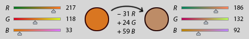
The need for a more intuitive coordinate system to map out colors has been appreciated by artists and researchers for a long time. For example, in 1810, Philipp Otto Runge created a color sphere where hues were associated with the polar angle, saturation with the radius, and lightness/darkness with the \(z\)-axis. In this spherical geometry, each of the coordinates has a meaningful perceptual interpretation.
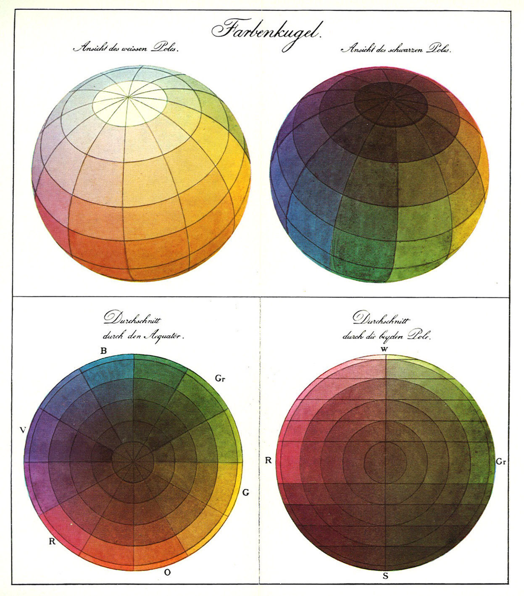
There have been many more modern refinements. The most widely used alternative to RGB in practice is HSL, which stands for Hue, Saturation, and Luminance. The hue and saturation axes can be visualized using a color wheel, and modifying the luminance leads to different color wheels.
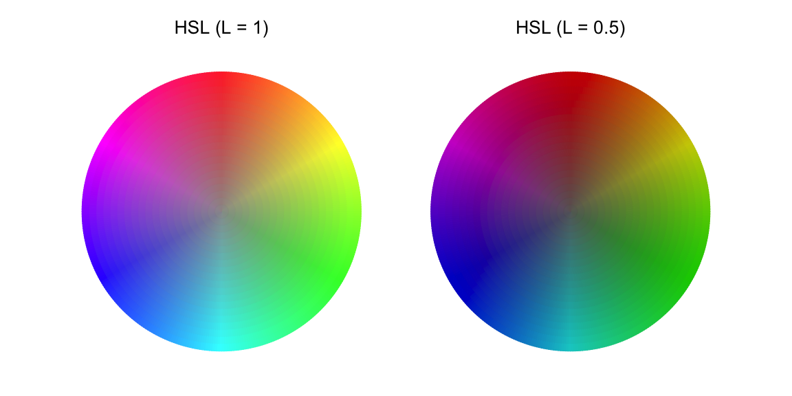
Considering the range \(0 \leq L \leq 1\), the color space can be viewed as a cylinder.
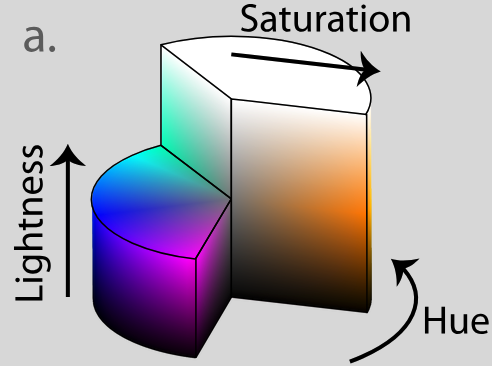
The system is actually derived by transforming the RGB cube. We tilt the cube so that black and white appear at the top and bottom. We then fill in the gaps to form an entire cylinder.
One subtlety is that luminance in HSL doesn’t correspond exactly to how we perceive luminance in our visual system. In the figure below, all the colors have the same “L” value in HSL, shown in the top row, but in perceptual studies, people consistently order the perceived luminance according to the bottom row.
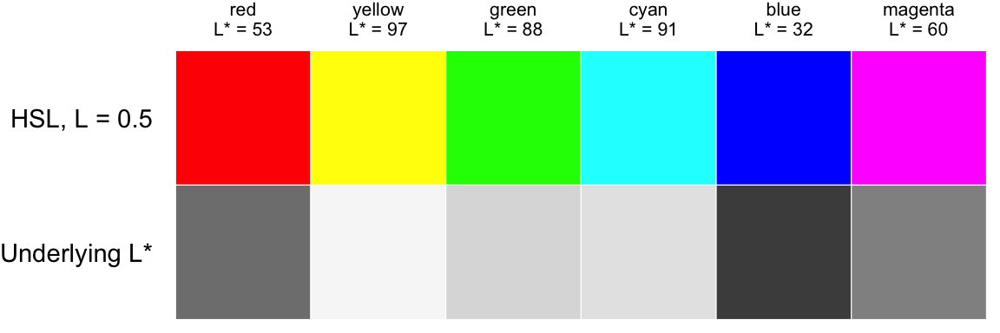
For this reason, the \(L^\ast a^\ast b^\ast\) color space was developed. The goal was to create a color space that is perceptually uniform, in the sense that it has been calibrated to match the luminance judgments made by human study participants. The bottom row in the plot above gives the \(L^\ast\) values associated with each of the colors in the top row.
There’s an entire science based around how people perceive color and how we should represent it theoretically. It could easily be an entire class. Since our focus is data visualization, let’s consider how these aspects of color theory can influence the use of color as a visual encoding channel.
Visual Encodings Revisited
Luminance, hue, and saturation are each separate visual channels that can be manipulated to encode data. This gives us much more precise language for describing the “color channel” that appeared previously in our hierarchy of encodings.
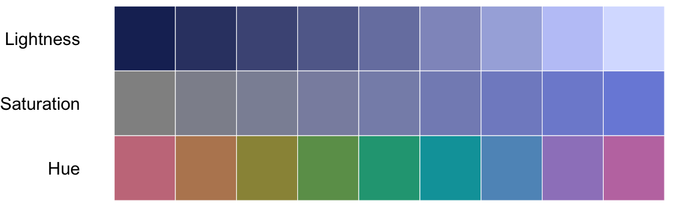
For example, here is the same variable encoded using each channel.
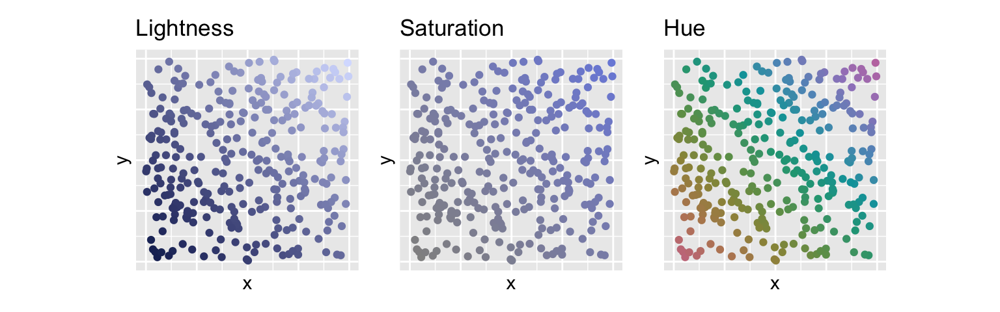
While luminance is appropriate for encoding ordered data, it’s difficult to tell apart small differences. The reading argues that we should never expect our audience to be able to tell apart more than five different values of luminance.
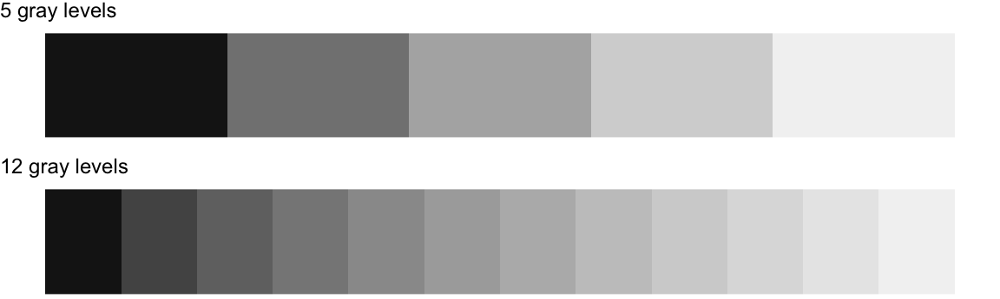
This is also important for thinking about text. A 3:1 luminance ratio between text and the background is almost impossible to read. The reading recommends at least a 10:1 ratio.
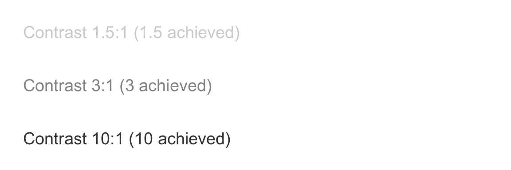
Similarly to luminance, saturation can be used for ordered data. But again, we can only differentiate so many bins, and in fact, the recommended maximum for this channel is three. Another rule of thumb is that for small marks, we should use more saturated colors, while for larger regions, we should use less saturated colors (pastels).
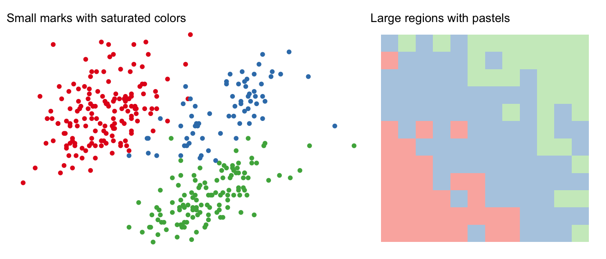
Hue is a highly ranked visual channel for telling apart categorical data values. It’s easy to tell the difference in hue for contiguous regions but harder to tell differences in hue when they’re far apart. In a small region we can tell apart roughly six or seven hues at a time.
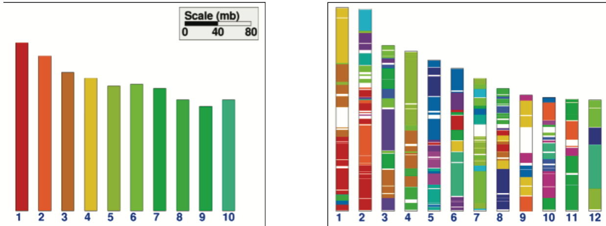
Figure from (Sinha and Meller 2007)Unlike saturation and luminance, hue doesn’t have a natural ordering. Though it can be applied to ordered data, like with a rainbow color map, these comparisons require more cognitive effort. In some settings we’ve already learned to associate hue with ordering (e.g., green, yellow, and red on traffic lights), but this isn’t built into our basic perception in the same way that saturation and luminance comparisons are.
Transparency is related to color, and can in principle be used to encode ordered data. For example, the largest values can be 0% transparent, the next largest can be 10% transparent, etc. However, transparency strongly interacts with luminance and saturation, in the sense that a fully saturated but 20% transparent point might be confused with a less saturated but 0% transparent point. For this reason, transparency encoding should not be used together with luminance and saturation gradients.
The most defensible use of transparency is in differentiating foreground from background layers. Anything more than two bins becomes difficult to perceive accurately.
Color Map
To actually use color to encode a data attribute, we need a color map, which maps from a domain of data values to a range of colors. A first distinction between color maps is between ordered and categorical color maps. For ordered data, we can think of this as traversing a path through the 3D color space. For categorical data, this is a selection of points in that space.
For ordered variables, we can use either continuous or stepped color maps. Stepped color maps are segmented into discrete bins.
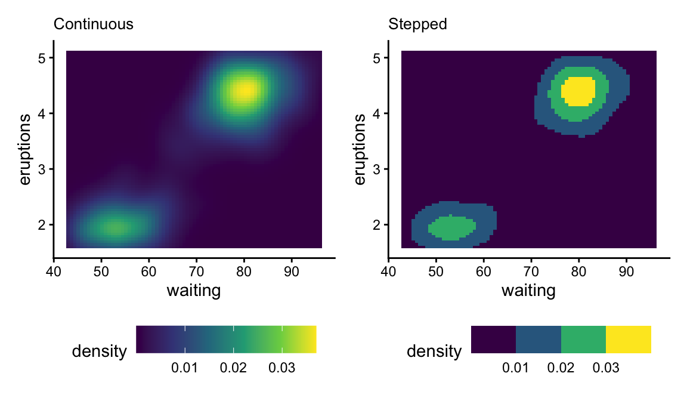
Categorical color maps
For categorical color maps, it is important to choose colors that can be differentiated from one another. A good default is to choose complementary colors as much as possible (those on opposite sides of the color wheel). There is some disagreement about the maximum number of colors to use at once, but they range from 6 - 12.
How many colors we can tell apart at once also depends on how much space is available for showing them. For colors confined to small spaces, we should use fewer categories. In the first visualization, we can still perceive the 21 different colors (the fact that they are physically separated also helps). The second has the same number of colors, but since they are shading in smaller segments, it’s much harder to tell them apart.
Considering that we may be able to only distinguish so many colors in a categorical color map, what should we do with data with many categories? Some reasonable approaches are,
- To bin the groups into a smaller number of categories.
- To group all the rare categories into “other”.
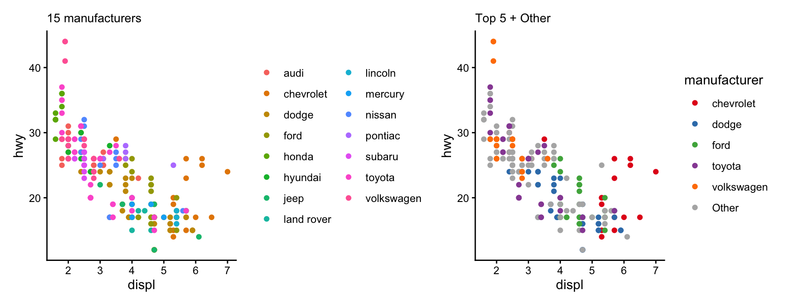
If it’s absolutely necessary to distinguish every category, one option is to cross another channel along with color. If we had 12 categories, we could show 4 hues \(\times\) 3 shapes, instead of 12 separate hues.
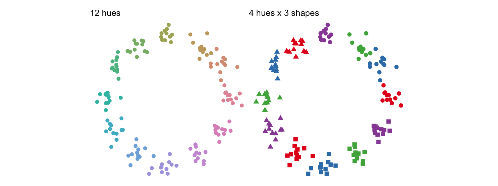
Even with a fixed set of hues, we still have to make a decision about the luminance and saturation for each hue. There’s no universal recipe for setting this. Sometimes it’s recommended to use high luminance contrast across categories. The advantage of this is that the categories can be read apart even on black-and-white paper. But this can be misleading if it draws too much attention to the high luminance categories.
A good color map resource is ColorBrewer, a set of color palettes created by Cynthia Brewer for use in spatial data visualization. They have been chosen so that categories are easy to differentiate. It provides color maps with both high (Set1) and low (Set2) saturation. It also has high (Set1, Set2) vs. low (Dark1, Dark2) luminance versions
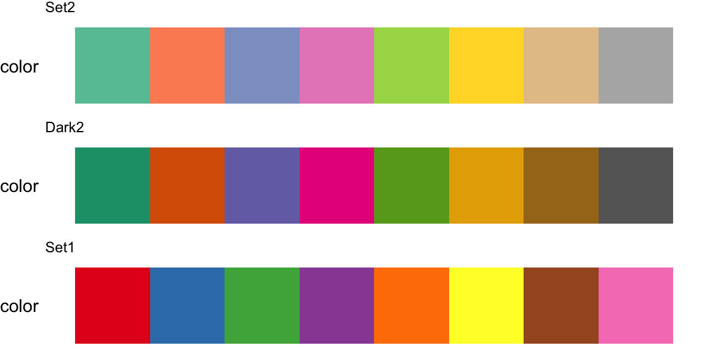
\(^\dagger\) One trick to keep in mind is that gray is actually a versatile color to use in data visualization. A complete list of potential use cases is given here. In general, it tends to be useful in setting the context and helping us get oriented to the overall data on which the most important elements might be placed.
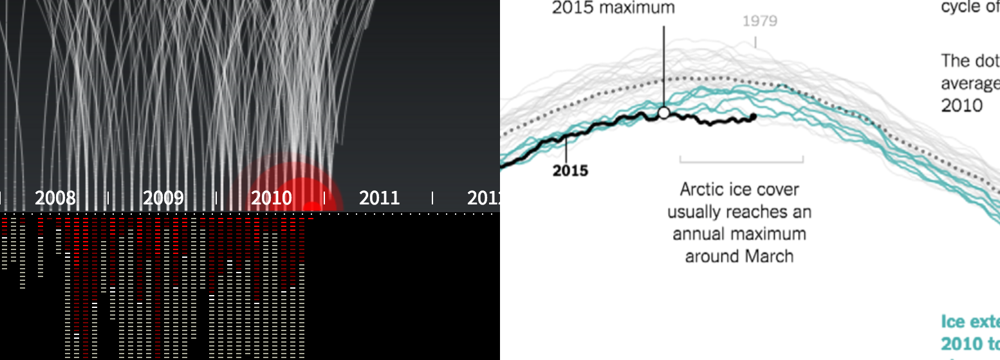
Ordered color maps
There are two types of color maps for ordered data.
- Sequential color maps range from a minimum to a maximum value.
- Diverging color maps have a meaningful midpoint and must ensure that the endpoints are different both from one another and from the midpoint.
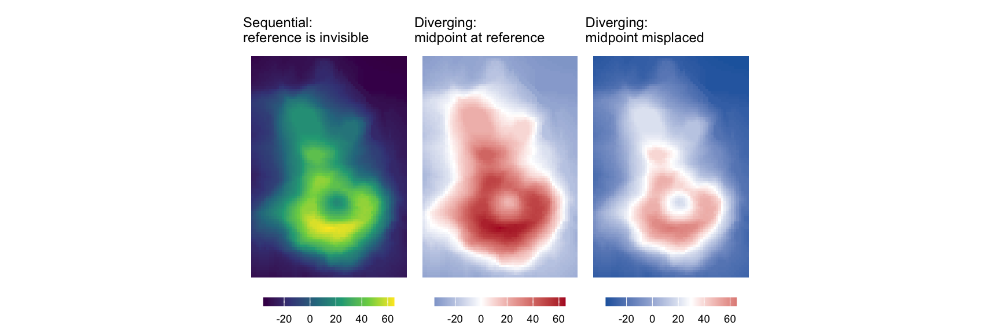
Our discussion of luminance and saturation shows that these are well-suited to defining sequential color maps. Consider fixing a hue. We can obtain an associated sequential map either by varying saturation (one end will be white) or luminance (one end will be black). If we ignore hue entirely, then we recover gray scale.
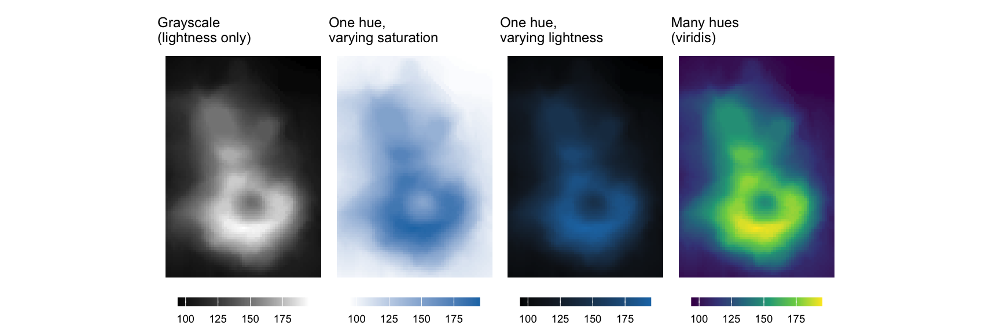
Alternatively, we can use multiple hues in a sequential colormap. The fewer hues that are considered, the easier it is to perceive global differences. The more hues that are considered, the more that fine-grained structure is emphasized. At the extreme, we can use a rainbow color palette. Even though this makes small differences in the data attribute visible, it can blind us to larger change, because hues don’t have a natural ordering. The example below comes from (Bergman et al. 1995).
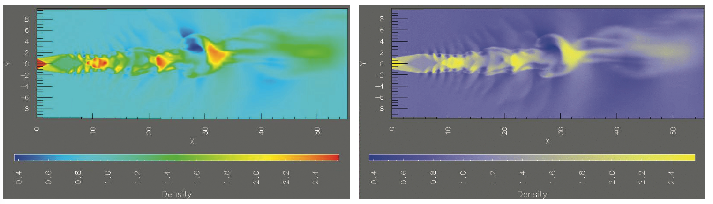
Another problem is that rainbow color palettes are not perceptually linear. 1000 data units in one part of the range can go through three different colors while 1000 units at another point all appear like the same hue.
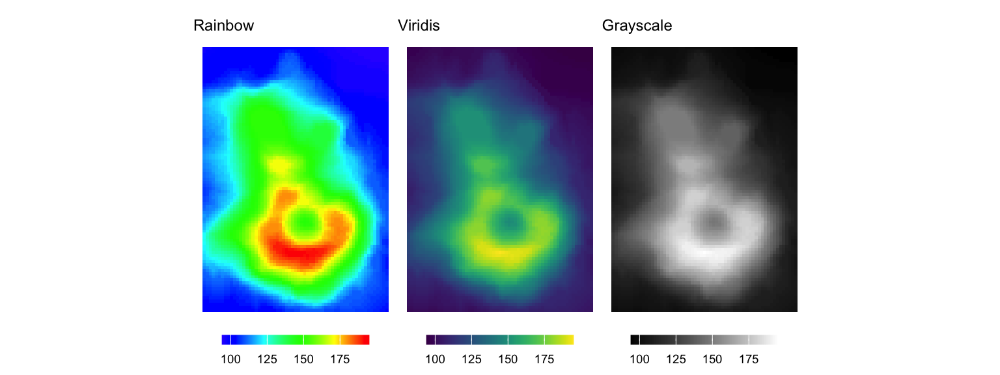
Bivariate color maps
While it’s not as common, a single color map can be used to visualize two data variables using a bivariate color map. Each dimension in the map matches a different variable. This is difficult to use for categorical variables, but it can work when each variable is ordered. Be careful that some readers find this difficult to read.
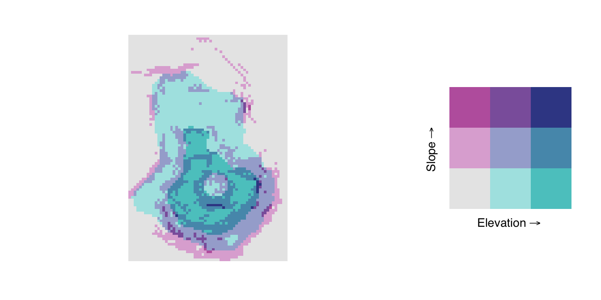
This example by Joshua Stevens visualizes public health data from the CDC.
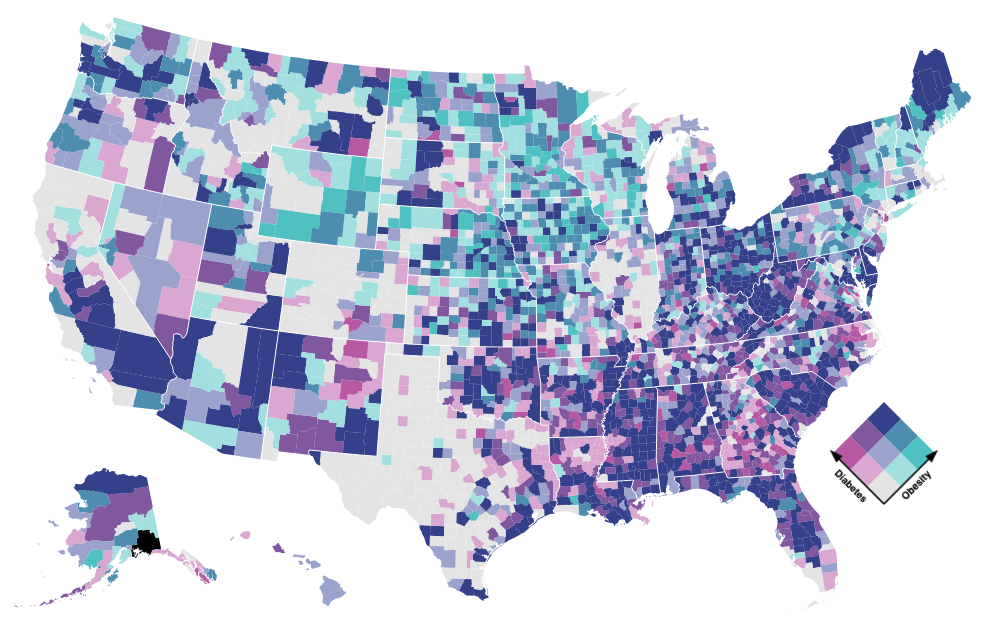
Accessibility and Emotion
Red-green color blindness can affect 8% of men and about a half a percent of women. To design for colorblind readers, you can use a simulator which approximates (for those without color blindness) how the visualization would appear to someone who is colorblind.
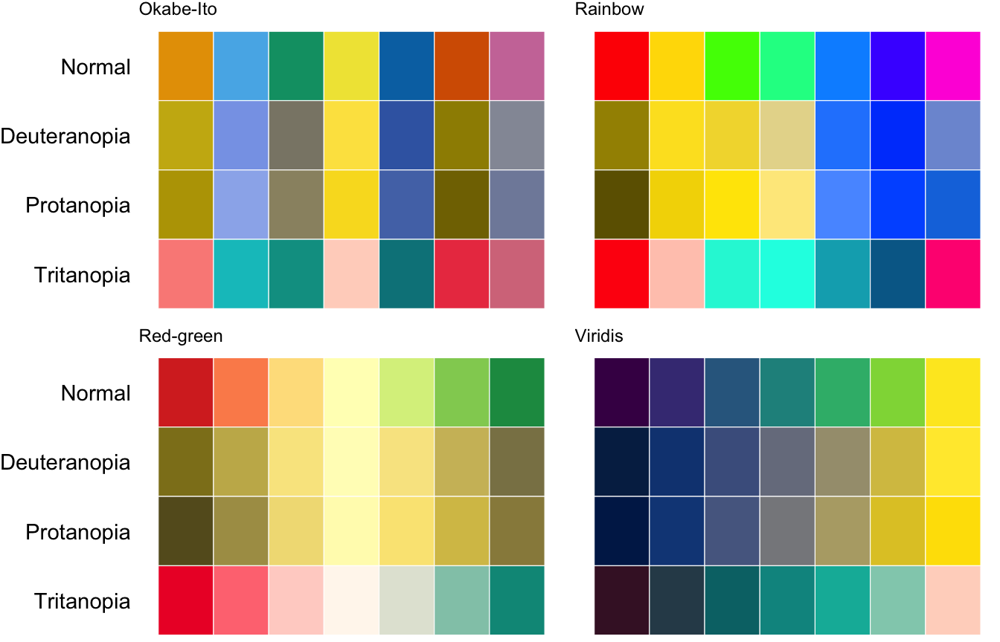
Finally, remember that colors carry many associations in our society, especially with emotion. This example from the optional reading gives a sense of how we internalize different color associations.
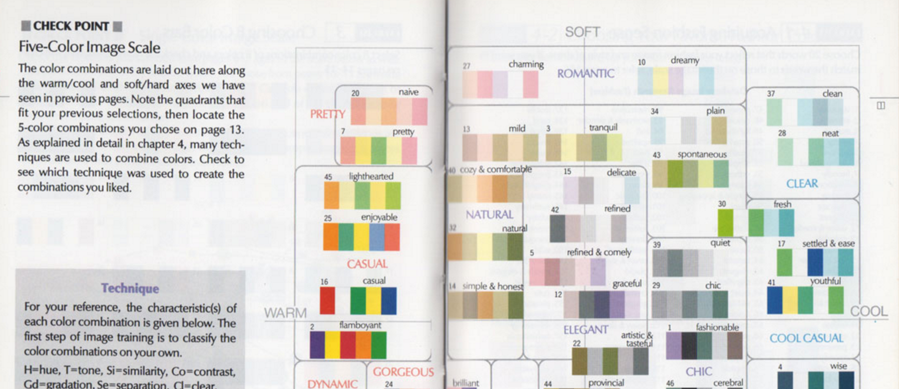
An interesting scientific analysis was carried out by UW-Madison visual communications professor Nan Li. Her team analyzed how different ways of portraying COVID affected readers’ responses (Li et al. 2022). The microscopy images below don’t have any color to begin with. They were all added by the scientific illustrator. The colors that they chose influenced whether readers experienced fear when viewing their image.
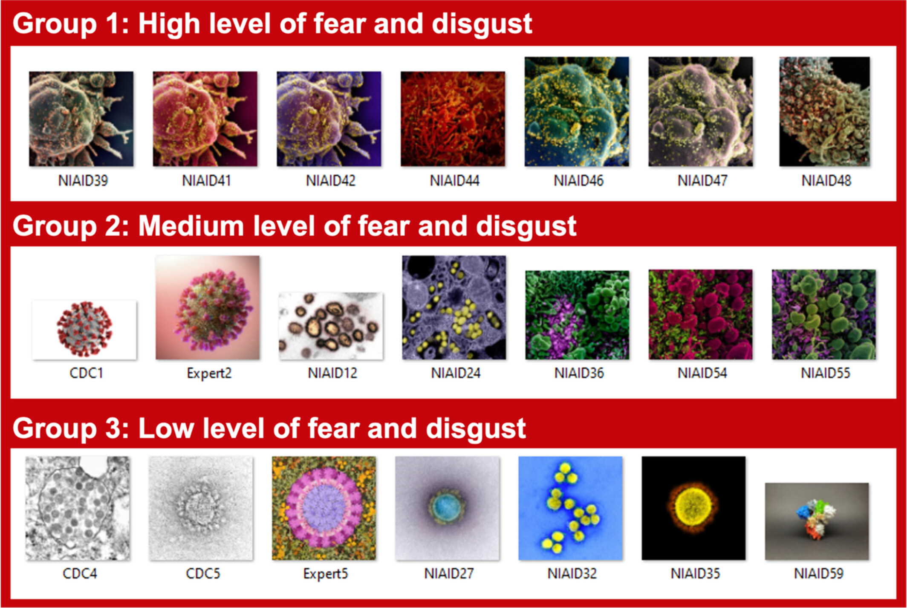
Implementation
In ggplot2, we can implement custom colormaps using scale layers. For categorical scales, we can use
scale_color_manual. To specify a color, we have to use RGB hex codes. These are strings of six characters giving the coordinates in RGB space (the first two positions correspond to red, the next two to green, and the last two to blue). Most color palette selectors, even those that are based on HSL space, will allow us to extract these RGB hex codes.penguins |> ggplot(aes(bill_length_mm, bill_depth_mm, color = species)) + geom_point() + scale_color_manual(values = c(Adelie = "#E41A1C", Chinstrap = "#377EB8", Gentoo = "#4DAF4A")) + labs(x = "Bill length (mm)", y = "Bill depth (mm)", color = "Species")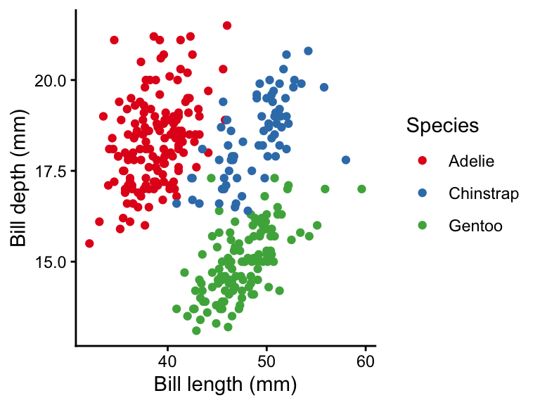
Note that if you use
fillin the graphical encoding (like forgeom_barorgeom_tile), then you can replace color with fill inscale_color_manualand any of the color scales discussed below. This is why you might see some of the code referring toscale_fill_*when my discussion talks aboutscale_color_*.ggplot2 has built-in color brewer palettes using the
scale_color_brewerlayer. The Color Brewer website lets you explore these options interactively.penguins |> ggplot(aes(bill_length_mm, bill_depth_mm, color = species)) + geom_point() + scale_color_brewer(palette = "Set1") + labs(x = "Bill length (mm)", y = "Bill depth (mm)", color = "Species")
If you ever want to modify these colors, you can also extract the hex codes directly using
brewer.palfrom the RColorBrewer package.brewer.pal(3, "Set1")[1] "#E41A1C" "#377EB8" "#4DAF4A"There are websites that let you select a color palette from an image. For example, adobe color express or coolors. Some allow you directly to copy the hex codes. For others, it might help to download the ASE file format, which can be read using
read_asefrom the swatches library. For inspiration, I often use1 colors from paintings, and the reading mentions getting inspiration from movie stills.pal <- read_ase("figures/matisse_palette.ase", use_names = FALSE) penguins |> ggplot(aes(bill_length_mm, bill_depth_mm, color = species)) + geom_point() + scale_color_manual(values = pal) + labs(x = "Bill length (mm)", y = "Bill depth (mm)", color = "Species")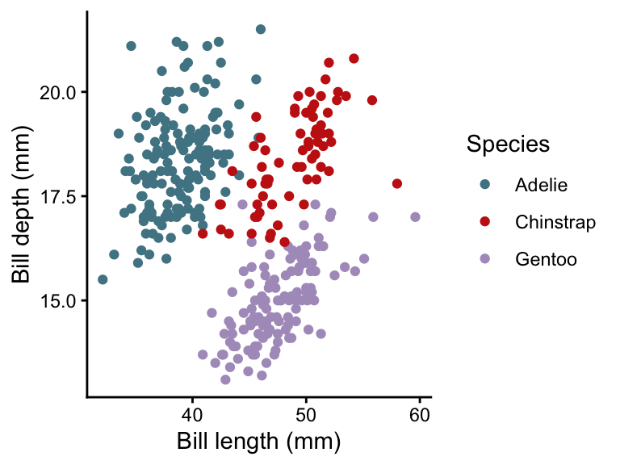
We mentioned that one solution to working with many categories is to lump many of them into “other.” The
fct_otherfunction helps with this by setting anything not in thekeepargument to an “Other” value.fct_lump_nworks similarly but automatically finds thenmost common categories.# the last level is "other" pal <- c(brewer.pal(3, "Set1"), "grey") p_other <- mpg |> mutate(mfr = fct_other(manufacturer, keep = c("toyota", "honda", "ford"))) |> ggplot(aes(displ, hwy, color = mfr)) + geom_point() + scale_color_manual(values = pal) + labs(title = "fct_other", color = NULL) p_lump <- mpg |> mutate(mfr = fct_lump_n(manufacturer, 3)) |> ggplot(aes(displ, hwy, color = mfr)) + geom_point() + scale_color_manual(values = pal) + labs(title = "fct_lump_n3", color = NULL) p_other + p_lump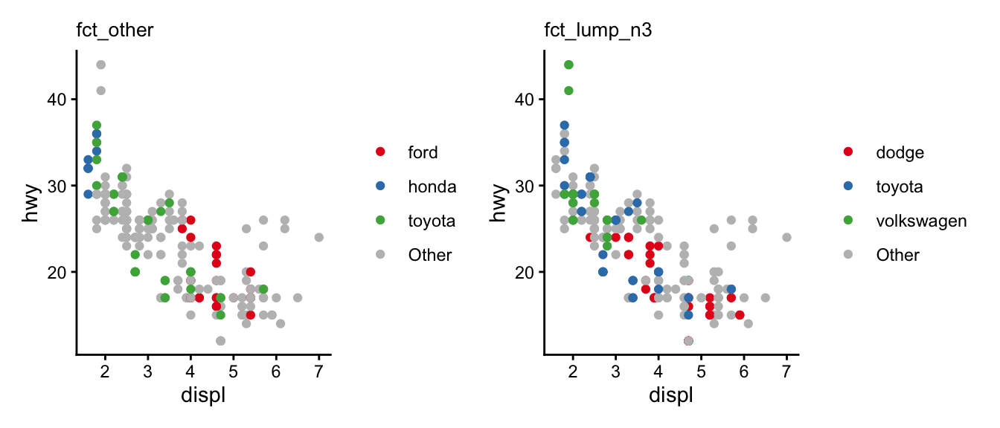
For ordered color scales, we can use
scale_color_gradient(sequential) orscale_color_gradient2(diverging).scale_color_gradientallows you to input low and high values, and it will interpolate the gradient for you.ggplot(faithfuld, aes(waiting, eruptions, fill = density)) + geom_tile() + scale_fill_gradient(low = "white", high = "#1f78b4")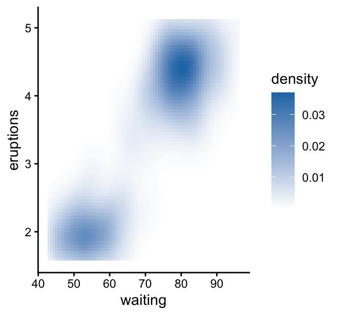
scale_color_gradient2works similarly, except you also have to provide the color (mid) and value (midpoint) of the center of the color scale.elev_c <- elev |> mutate(z = z - 130) ggplot(elev_c, aes(col, row, fill = z)) + geom_tile() + coord_equal() + scale_fill_gradient2(low = "#2166AC", mid = "white", high = "#B2182B", midpoint = 0) + theme_map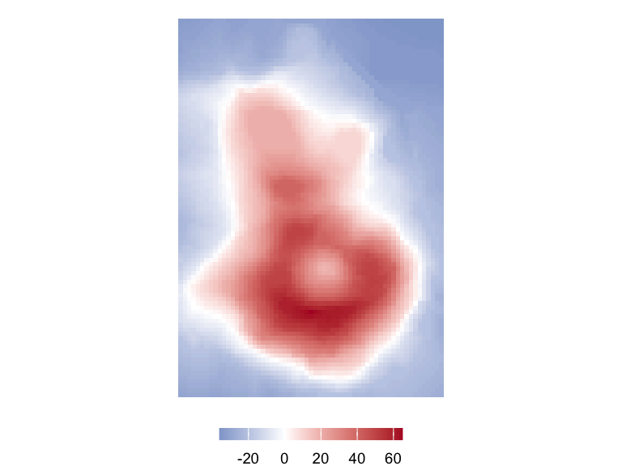
We can create binned versions of these ordered color maps using
scale_color_stepsandscale_color_steps2p1 <- ggplot(faithfuld, aes(waiting, eruptions, fill = density)) + geom_tile() + scale_fill_steps(low = "white", high = "#1f78b4") p2 <- ggplot(elev_c, aes(col, row, fill = z)) + geom_tile() + coord_equal() + scale_fill_steps2(low = "#2166AC", mid = "white", high = "#B2182B", midpoint = 0) + theme_map p1 + p2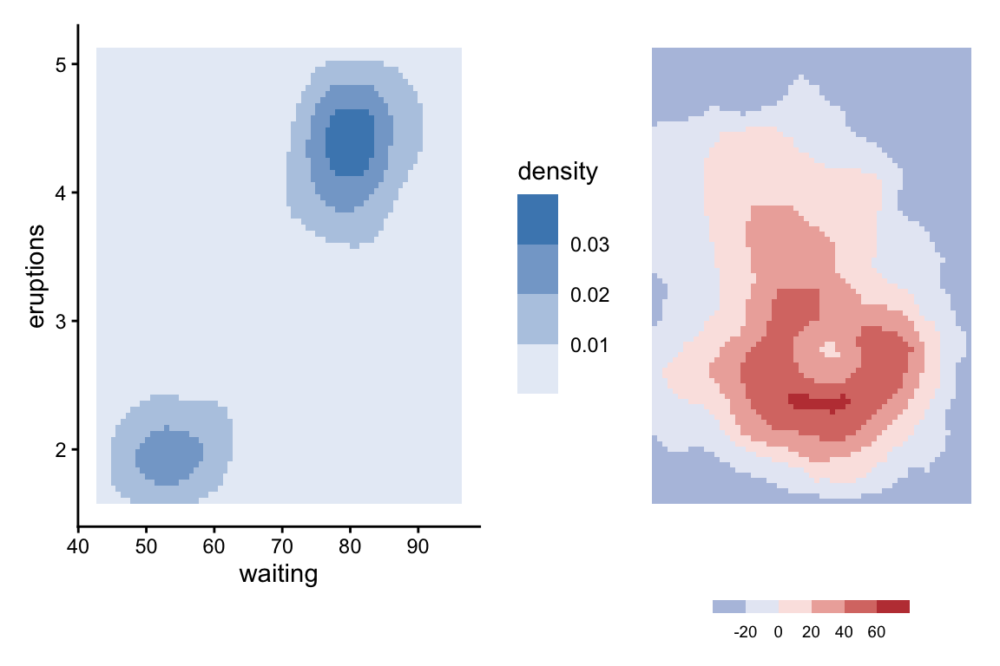
Similarly to how
scale_color_brewerprovides a default colormap for categorical data, thescale_color_viridis_c,scale_color_distiller, andscale_color_fermenterfor well-known gradient scales. For example, below we show a few options implemented by viridis.base_map2 <- ggplot(faithfuld, aes(waiting, eruptions, fill = density)) + geom_tile() + theme_diagram (base_map2 + scale_fill_viridis_c(option = "viridis") + labs(title = "viridis")) + (base_map2 + scale_fill_viridis_c(option = "magma") + labs(title = "magma")) + (base_map2 + scale_fill_viridis_c(option = "plasma") + labs(title = "plasma")) + (base_map2 + scale_fill_viridis_c(option = "cividis") + labs(title = "cividis"))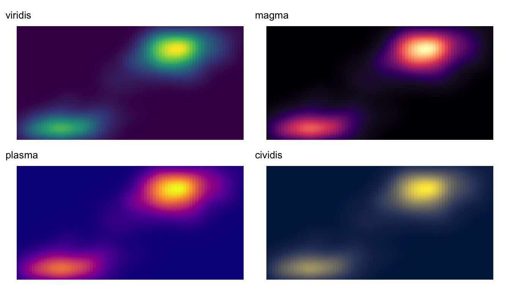
These named color gradient scales also come with binned versions. For example, for the viridis scale, we can use
_binstead of_cin the suffix.#| echo: false base_map <- ggplot(faithfuld, aes(waiting, eruptions, fill = density)) + geom_tile() + theme_colorbar (base_map + scale_fill_viridis_c() + labs(title = "Continuous")) + (base_map + scale_fill_viridis_b(n.breaks = 5) + labs(title = "Stepped (5 bins)"))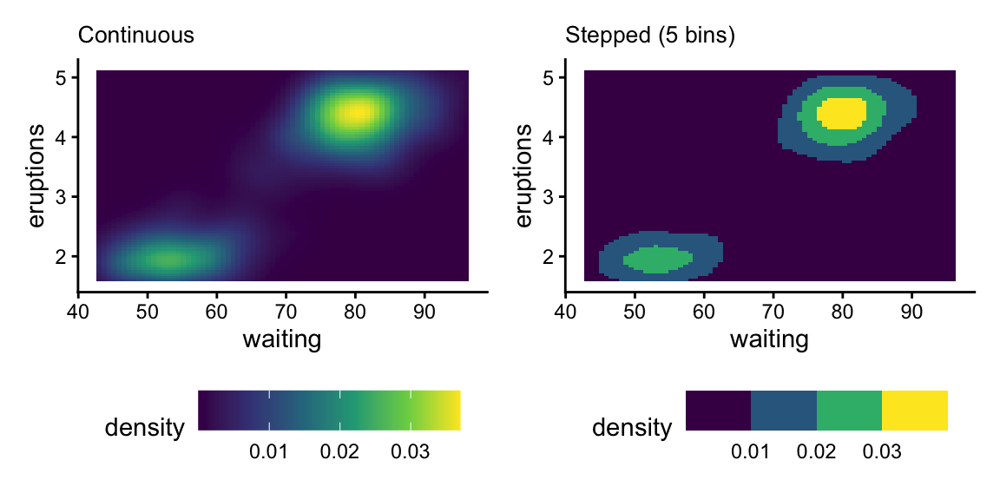
Similarly for
scale_color_distiller, the binned equivalent isscale_color_fermenter.#| echo: false (base_map + scale_fill_distiller(direction = 1) + labs(title = "distiller (continuous)")) + (base_map + scale_fill_fermenter(direction = 1, n.breaks = 5) + labs(title = "fermenter (stepped)"))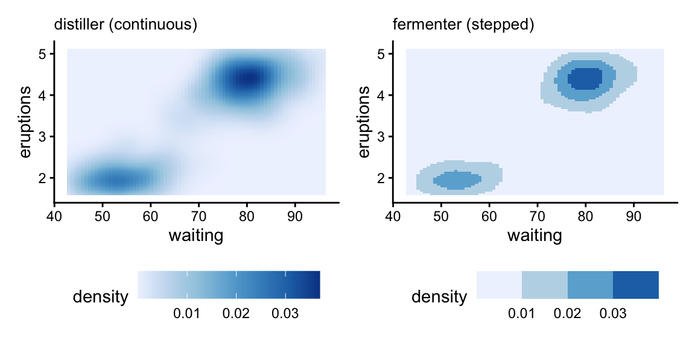
Another resource worth knowing about for building color gradients is
scico. These have been evaluated using user studies to be as perceptually uniform as possible. You can view all the available gradients here.library(scico) (base_map2 + scale_fill_scico(palette = "bamako") + labs(title = "bamako")) + (base_map2 + scale_fill_scico(palette = "batlow") + labs(title = "batlow")) + (base_map2 + scale_fill_scico(palette = "vik") + labs(title = "vik (div)")) + (base_map2 + scale_fill_scico(palette = "roma") + labs(title = "roma (div)"))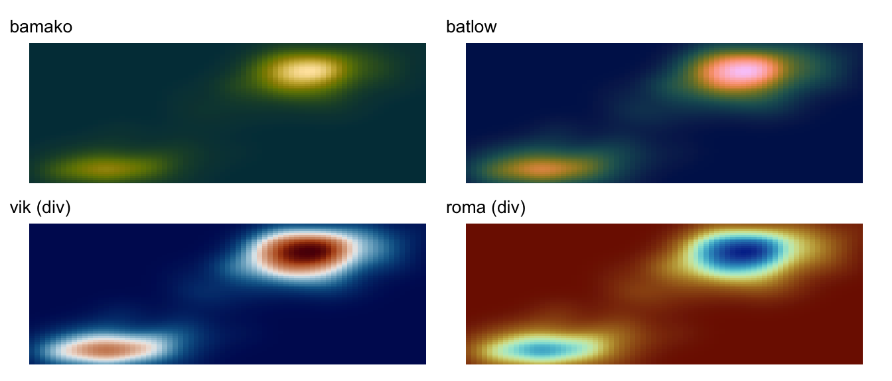
If you want to simulate how color blindness looks in a proposed color palette, you can use functions from the colorspace package. For example, remember the ColorBrewer palette that we extracted above.
par(mar = c(0.1, 0.1, 0.1, 0.1)) swatchplot(pal)This is what it would look like under three types of color blindness.
par(mar = c(0.1, 0.1, 0.1, 0.1)) swatchplot(deutan(pal))swatchplot(protan(pal))swatchplot(tritan(pal))You can also use online tools like the Adobe color accessibility page or colorhexa.
References
Bergman, Lawrence D., Bernice E. Rogowitz, and Lloyd A. Treinish. 1995. “A Rule-Based Tool for Assisting Colormap Selection.” Proceedings Visualization ’95, 118–25. https://doi.org/10.1109/VISUAL.1995.480803.
Li, Nan, Amanda L. Molder, and Shiyu Yang. 2022. “Visual Representations of SARS-CoV-2, Emotions, and Risk Perception of COVID-19.” Health Science Reports 5 (1): e496. https://doi.org/10.1002/hsr2.496.
Sinha, Amit U., and Jaroslaw Meller. 2007. “Cinteny: Flexible Analysis and Visualization of Synteny and Genome Rearrangements in Multiple Organisms.” BMC Bioinformatics 8 (1): 82. https://doi.org/10.1186/1471-2105-8-82.
Footnotes
The example below is from https://www.wikiart.org/en/henri-matisse/woman-with-hat-1905/.↩︎